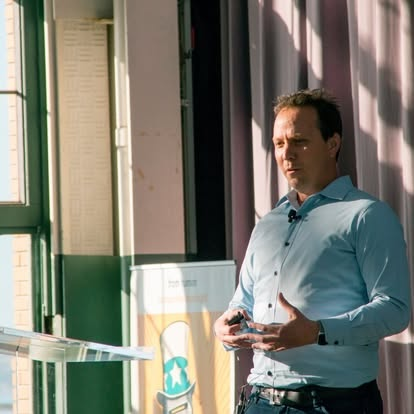

Research · Strategy · Speaking
Futurist · Researcher · Speaker
For 15 years I've been helping organizations think more clearly about the future — through research that reframes complex challenges, workshops that unlock new strategic options, and keynotes that make long-range change tangible and actionable. Currently a Research Leader at Deloitte's Center for Integrated Research; previously a decade-plus at Institute for the Future directing major global foresight programs.

Deloitte Insights
As a Research Leader with Deloitte's Center for Integrated Research, I produce rigorous, data-driven thought leadership on how AI, workforce data, and human-machine collaboration are reshaping organizations.
Explores how human capabilities — not just technical skills — may be the key differentiator in building resilient, high-performing teams as AI reshapes organizational work models.
Read article →New data from a survey of 11,900+ individuals surfaces challenges and opportunities for employers — including how to preserve learning pathways for early-career workers in an AI-accelerated workplace.
Read article →Examines how AI and demographic shifts — retiring experienced workers, shrinking pipelines — are combining to demand new approaches to workforce agility, knowledge transfer, and upskilling.
Read article →As businesses deploy autonomous AI agents alongside human workers, organizations must rethink workflows, governance, and decision rights — moving beyond bolting AI onto models designed for humans alone.
Read article →Scenario planning for strategic resilience — examining four plausible futures for how generative AI could reshape the enterprise, helping leaders plan for uncertainty and build adaptable strategies.
Read article →Analyzes the structural forces driving the tech talent gap and outlines how organizations can transform their approach to planning, attracting, and activating technical talent.
Read article →A multi-report series examining how organizations can harness workforce data to drive human performance — reframing surveillance as shared value. Based on surveys of 2,000+ workers and 50+ case studies.
Read the series →Drawing on qualitative interviews across 30 companies, this article examines how human-AI collaboration is reshaping workplace experience — and what organizations must do to ensure these partnerships benefit workers.
Read article →Expertise
Architecting long-term scenarios that help leaders make more resilient decisions. Using qualitative research, signals scanning, expert interviews, and cross-industry synthesis to map the decade ahead — provoking insight and shaping action in the present.
Delivering keynotes and talks that translate complex, long-range research into ideas that stick — on stages ranging from intimate executive gatherings to large international conferences, across five continents.
Designing and running workshops that move groups beyond their current thinking — from strategy and visioning sessions to innovation sprints and futures methods trainings, helping teams develop their own foresight capabilities.
Leading large-scale research projects and translating findings into compelling narratives — from Deloitte Insights publications and Wall Street Journal features to visual research maps and in-person conference presentations.
IFTF Projects
Throughout my time at IFTF, I directed large-scale, multi-client foresight research programs spanning technology, health, food, and global trends — delivering findings through reports, visual maps, keynotes, and executive workshops. Below are some highlights:
Framing the climate crisis as the defining strategic force of the 2020s — and helping organizations act with urgency in a longer timeframe than usual.
View project →Analyzing how converging advances in biotech, energy, and materials science will open new strategic frontiers and demand organizational resilience.
View project →A year-long study of how climate change, automation, and institutional volatility are redistributing power and remaking the global operational environment.
View project →Examining how emerging forces are challenging traditional models of trust — and what new frameworks are needed for brands, institutions, and individuals.
View project →Forecasting how advances across the technology stack will create a world of intelligent, autonomous objects — and what values we need to encode into them.
View project →Arguing that the next decade wouldn't produce one "next big thing" — but a communications landscape reshaped by AI, VR/AR, and ambient computing combined.
View project →Talks & Keynotes
Selected highlights from talks delivered across five continents
The Value of Foresight in Practice
I've worked with organizations ranging from global enterprises and government agencies to nonprofits and research institutions — helping them think more clearly about what's coming and what to do about it.
Working with product and innovation teams, I help break out of incrementalism — connecting present-day signals to longer-range shifts so that new opportunities feel grounded and urgent, not speculative. Teams leave with concrete directions to explore, not just inspiration.
Some of the most valuable foresight work happens at scale — producing thought leadership that influences how entire industries think about emerging challenges. Research I've led on AI, workforce transformation, and the future of work has reached thousands of senior leaders, with findings featured in the Wall Street Journal and major industry publications.
Foresight is most powerful when it becomes an organizational habit, not a one-time exercise. I've strengthened that capacity both as an outside consultant — building tools, habits, and frameworks across a wide range of organizations — and from inside a large organization, where I've seen firsthand what it takes to make long-range thinking stick.
The goal of foresight isn't prediction — it's better decisions under uncertainty. I've helped organizations identify emerging risks and opportunities before they become obvious, stress-testing strategic plans against multiple possible futures rather than a single assumed one.
Contact
Always happy to connect with curious people — whether you have a question about my research, want to discuss the future of work, or are just exploring ideas.